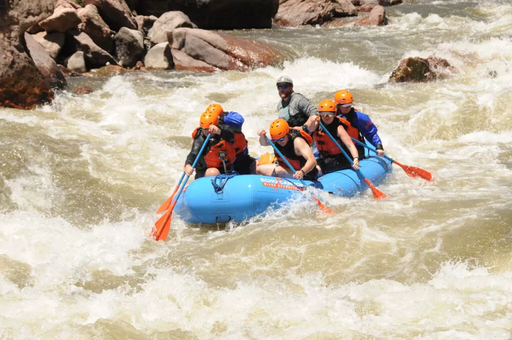

Rafting can be enjoyed in various forms, each offering a distinct experience. River rafting is a broad term encompassing any rafting activity on a river, while whitewater rafting specifically refers to navigating rapids. Other variations include recreational rafting, where the focus is on a relaxed journey, and extreme rafting, which pushes the boundaries of adventure with challenging rapids and daring maneuvers.
The history of rafting dates back centuries, with evidence of early civilizations using rafts for transportation and fishing. However, the modern concept of recreational rafting emerged in the 1950s, evolving from simple rubber rafts to the specialized inflatable vessels used today. These rafts are typically made of durable materials like PVC or urethane, designed to withstand the rigors of river navigation.

Paragraph 2 about the history of rafting. Ut enim ad minim veniam, quis nostrud exercitation ullamco laboris nisi ut aliquip ex ea commodo consequat.